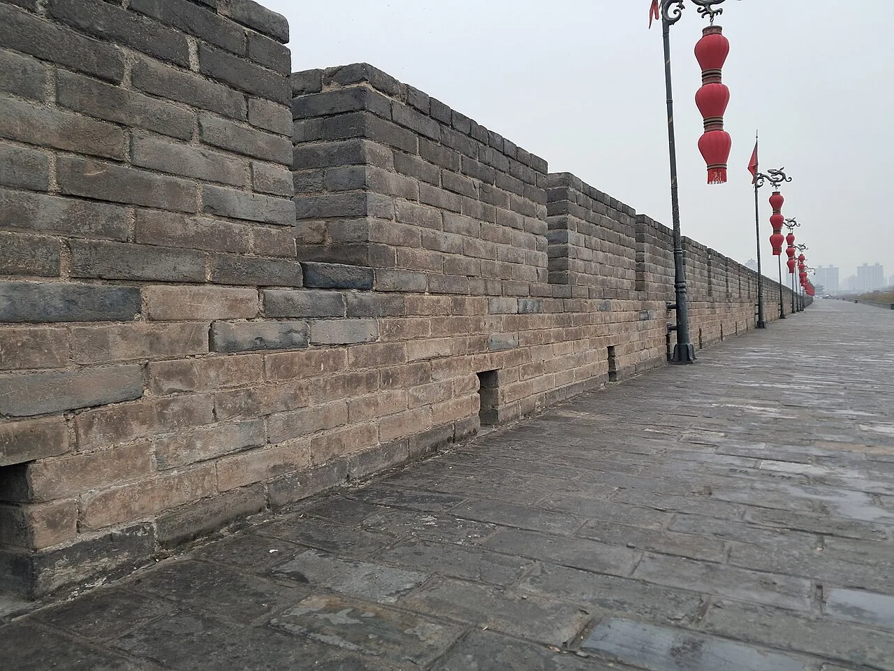

画册 · Album
全屏滚动画册
下拉切换每页旅行媒体，海报式文字排版 + 胶片颗粒质感。把一次出发，做成一本可以慢慢翻的册子。
海报排版胶片颗粒全屏沉浸
每一次出发，都是一座城市的旋转入口。滚动，开始环游。
从记录、规划、回望到分享，行迹把一次出发拆成八件小事，每件都认真做完。向下滚动，卡片会一张张落在桌上。
下拉切换每页旅行媒体，海报式文字排版 + 胶片颗粒质感。把一次出发，做成一本可以慢慢翻的册子。
d3-geo + SVG 手绘足迹地图：省份高亮、城市标记、虚线航线与足迹热点，走过的省一目了然。
Travel → TravelDay → 行程项 → 花费。完整数据模型支撑行程编排，后台可视化排布每一天的安排与开销。
旅行详情内按天回顾：每天的行程、回忆与照片按时间轴排布，像日记一样，把这次出发重读一遍。
复古像素风与银河星空两套视觉随心情切换；Three.js 粒子银河，把你的照片轻轻悬在星空里。
Space / SpaceMember / SpaceInvite 三层数据模型，OWNER / MEMBER / VIEWER 角色体系：独旅、情侣、朋友、家庭都能共用一本画册。
Masonry 瀑布流 Feed：推荐 / 最新 / 热门 / 关注四种视野；点赞、评论、收藏与举报审核闭环。
/me 护照式个人旅行档案：统计、最近旅行与照片化记忆，一键导出 JSON + Markdown + 原图 ZIP，数据永远是你的。

相册不只是网格和瀑布流。在行迹里，它们也可以是一面缓缓漂移的照片墙——走过的地方一张张流过，指针停在哪里，就为你点亮哪里。
行迹不替你决定去哪，而是把每一次出发、每一张照片、每一段文字，安静地收进一座画廊。翻开来，是走过的路；合上，是记下的日子。
登录、足迹地图、旅行画册、相册与旅行圈，一个安静收拢你城市记忆的地方。
Android、iOS、桌面端与 Web，把你走过的路装进一台随身画廊。
把每一次出发与归来，都装进口袋。